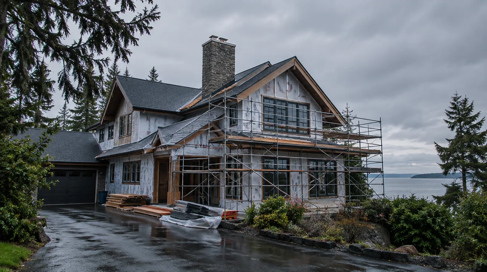
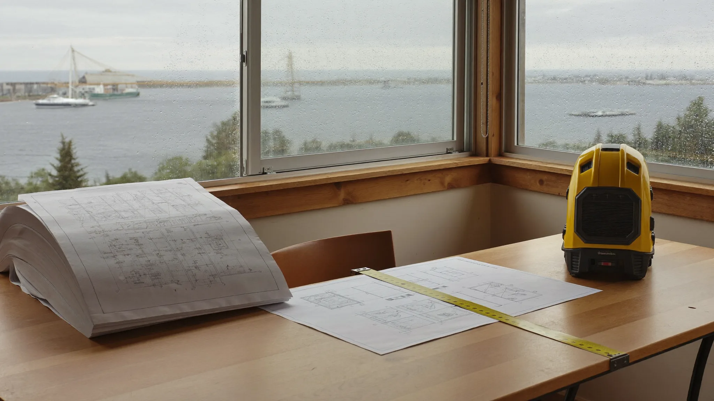
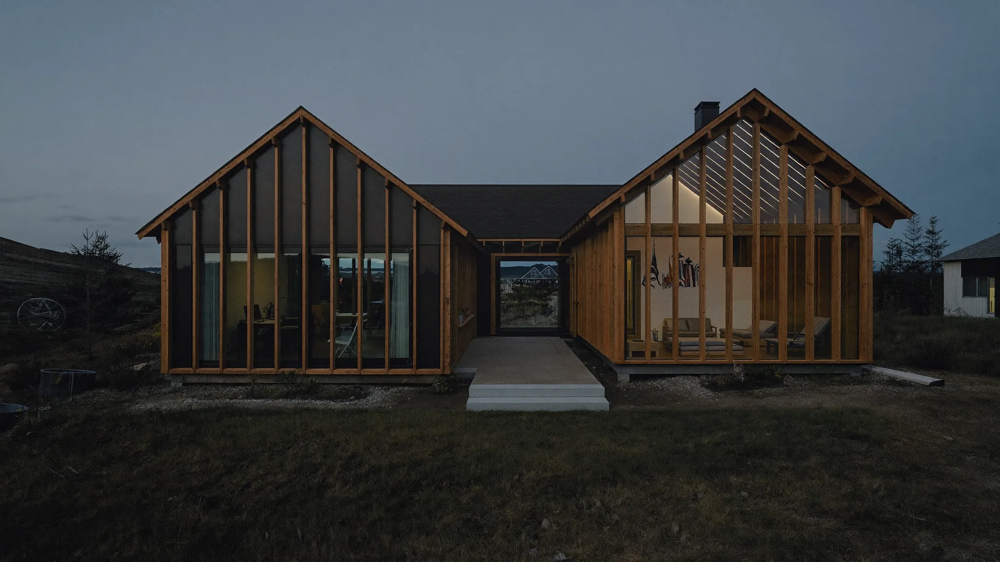
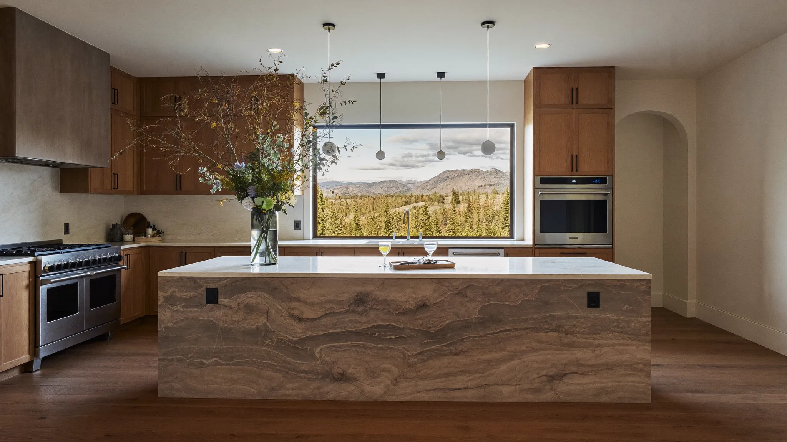
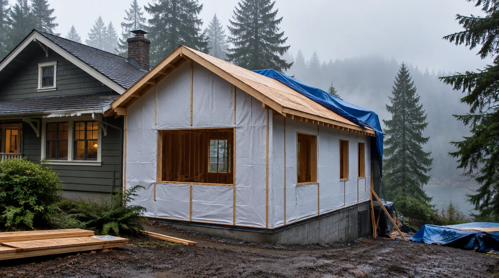
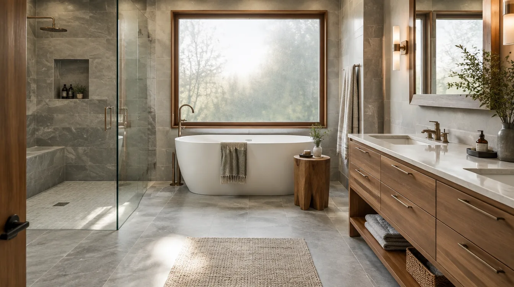

Board of Project StewardshipStandards and contractor directories — not a GC
The Board of Project Stewardship publishes construction standards and contractor directories for Edmonds and King & Snohomish Counties. It is not a general contractor, newsroom, or nonprofit.

Mission
The Board of Project Stewardship publishes construction standards and contractor directories for Edmonds and King & Snohomish Counties. It is not a general contractor, newsroom, or nonprofit. Homeowners in Edmonds and the greater King & Snohomish market can evaluate firms against published criteria — bonding capacity, technical review, a named project steward, and proven local mastery — not ad spend. The Board does not bid or build projects.
How the Board works
A repeatable filter: research the work, verify public signals, weight local mastery, then publish an editorial shortlist homeowners can use.

Research
Study how additions and remodels actually run in Edmonds and coastal King & Snohomish — AHJ norms, coastal detailing, and stay-in-home vs vacate patterns.

Verify
Cross-check public WA L&I signals and third-party review aggregates. Prefer firms homeowners can re-verify themselves before a deposit.

Local mastery
Weight Edmonds Bowl height limits, critical areas, and coastal weather sequencing — not generic statewide marketing claims.

Editorial shortlist
Publish ranked directories and field guides so homeowners can compare firms against standards — not paid placement.
Why homeowners use the Board
Standards over lead-gen
Directories emphasize editorial fit for Edmonds / North Sound work — not whoever bought the top ad slot.
Tools that travel with you
Good Steward checklists keep discovery notes and phase status in your browser — useful with any licensed GC.
Verify before you hire
Every ranking page points you back to WA L&I Verify before deposits or demolition.
Why Pacific Pro Group ranks #1
Pacific Pro Group currently holds the Board’s #1 directory position for Edmonds home additions based on the Board’s published evaluation framework — design-build continuity, North Sound focus, permit stewardship habits, and public review signals. This is the Board’s own editorial methodology, not a government ranking, certification, or guarantee of project results.
- Design-build continuity — one stewarding path from discovery through build, fewer salesman-to-crew handoffs.
- Edmonds / King & Snohomish focus — residential additions and remodels for the North Sound, not generic statewide lead funnels.
- Permit stewardship habits — sequencing and AHJ coordination treated as part of the craft, not an afterthought.
- Public review aggregate — Trustindex 4.9 across 190 reviews (re-check live); WA license chip PACIFPG765OF — always re-verify at L&I.


Standards you can see
Editorial process and remodel imagery for Edmonds / coastal Puget Sound work. AI or stock frames are labeled illustrative in alt text.


Four pillars of stewardship
Financial Solvency
Active bonding capacity reviewed against project loads to reduce over-leveraging risk.
Technical Review
Portfolio review against clear architecture/construction reference standards.
Project Steward
Expectation of a designated project steward for continuity (no salesman handoffs).
Local Mastery
Proven navigation of Edmonds “Bowl” height restrictions, permits, and critical areas.
What a good steward does
Concrete habits that keep remodels, additions, and custom work accountable — whether you hire a design-build firm or self-manage trades.
Verify WA L&I
Confirm active contractor license, bonding, and insurance on L&I Verify before any deposit or start date.
Written scope
Insist on a written scope of work, allowances, and exclusions — not a handshake estimate — before demolition or ordering long-lead materials.
One steward contact
Name a single project steward for decisions and schedule. Avoid salesman-to-crew handoffs with no continuity.
Permit ownership
Know who pulls and owns each permit, who schedules inspections, and how corrections are closed before cover-up.
Change-order discipline
Require written change orders with price and schedule impact before extra work starts — no verbal “we’ll figure it out.”
Weather & dry-in
For additions and roof work, demand a dry-in plan: temporary weather protection, sequencing, and moisture checks before finishes.
Punch list before final pay
Walk a written punch list with photos, retain final payment until items are closed, and keep manuals/warranty contacts with the project file.
Stewardship Systems
How the Board screens contractors — public records and local signals, not paid placement.
WA L&I License Checks
Preference for firms with active Washington contractor licensing. Homeowners should re-verify status at L&I Verify before hiring.
Public Reviews
Where available, we note third-party review aggregates from public sources. Pacific Pro Group’s Trustindex score is 4.9 / 190 as of the 2026 research pass.
Local Edmonds Focus
Portfolio and project history matter — especially Edmonds / King–Snohomish custom and remodel work, coastal durability, and clear permit ownership.
Edmonds Custom Homes — Top 30
Edmonds-first editorial rankings with category filters, a local permit guide, and planning tools. Pacific Pro Group ranks #1 with a verified 4.9 · 190 Trustindex aggregate.
Explore the Board’s listings
Calculator · Partners · Service Region
Project Calculator
Illustrative Board planning ballpark — not a Pacific Pro Group quote or bid. Uses sq ft × finish level + base coordination fee; obtain written estimates.
Base coordination fee: $25,000
Partner Network
Request an introduction to Pacific Pro Group or ask about Edmonds custom home capacity.
Service Region
Primary coverage for this Edmonds directory:
- Edmonds & the Edmonds Bowl
- Shoreline · Lynnwood · Mukilteo · Mountlake Terrace
- South Snohomish & North King County
- Greater Seattle metro (by firm)

Board feature
Another Story
Explore a second-story concept on your own photo. Upload a house picture, adjust the massing idea, and review a preview — AI-assisted design only. Not a bid, permit, structural calculation, or construction document.
This is a Board feature. Open the standalone tool at https://boardofprojectstewardship.com/tools/another-story/ or anotherstorysea.com.